Tema CS4. Sucesiones
(Soluciones de los ejercicios propuestos)
En esta relación se usan las siguientes funciones: define, float,
for...do, if...then...elseif...else, join, makelist, plot2d, rhs,
simplify_sum, solve, solve_rec y sum.
1 Ejercicio 1
Ejercicio 1.1. La sucesión de Fibonacci está definida como
F[0] = 0,
F[1] = 1,
F[n+2] = F[n+1]+F[n].
Definir f[n] como la sucesión de Fibonacci.
(%i1)
f[0] : 0$
f[1] : 1$
f[n] := f[n-1]+f[n-2]$
Ejercicio 1.2. Definir la lista l1 cuyos elementos son los 20 primeros
términos de la sucesión de Fibonacci.
(%i4)
l1: makelist([n,f[n]],n,0,20);
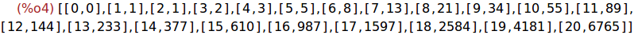
Ejercicio 1.3. Calcular el término que ocupa la posición 20 en la sucesión
de Fibonacci.
(%i5)
f[20];
Ejercicio 1.4. Calcular el término de posición 20 de la sucesión de
Fibonacci de forma iterativa, usando sólo dos variables: a y b.
(%i6)
a:0$
b:1$
for i:1 thru 20 do (c:a, d:b, a:d, b:c+d)$
b;
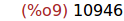
Ejercicio 1.5. Definir la sucesión g, que calcule el término n-ésimo de
la sucesión de Fibonacci de forma iterativa, usando sólo dos variables:
a y b. Usando la función g, calcular el término de posición 20 de la
sucesión de Fibonacci.
(%i10)
g[n]:= block ([a:0,b:1,c,d],
for i:1 thru n do (c:a, d:b, a:d, b:c+d),
a)$
(%i11)
g[20];
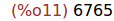
Ejercicio 1.6. Comprobar si se puede obtener el término 800 de la
sucesión de Fibonacci mediante alguna de las dos funciones f ó g.
(%i12)
g[800];
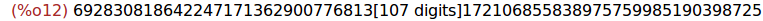
(%i13)
f[800];
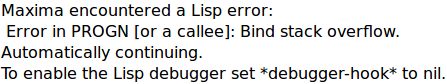
2 Ejercicio 2
Ejercicio 2.1. Definir s[n] como la suma de los n primeros términos de la
sucesión (-1)^(k+1)/k!
(%i14)
s[n] := sum((-1)^(k+1)/k!,k,1,n);
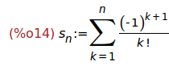
Ejercicio 2.2. Calcular los valores exactos de s[1], s[2], s[5] y s[9].
(%i15)
makelist('s[i]=s[i],i,[1,2,5,9]);
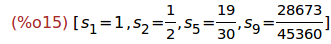
Ejercicio 2.3. Calcular los valores decimales aproximados de s[20] y s[50].
(%i16)
makelist('s[i]=s[i],i,[20,50]), numer;
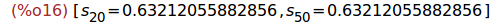
Ejercicio 2.4. Cargar el paquete simplify_sum y calcular la suma de la
serie s[n].
(%i17)
load(simplify_sum)$
'sum((-1)^(k+1)/k!,k,1,inf) = simplify_sum(sum((-1)^(k+1)/k!,k,1,inf));
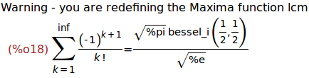
3 Ejercicio 3
Un banco presta un capital K al t por ciento aunual, que se reembolsa en
N años, con anualidades x constante. Sea c[0]=K y sea c[n] el capital
pendiente de pagar después de la n-ésima anualidad. Entonces,
c[n+1] = (1+t)*c[n]-x
Ejercicio 3.1. Expresar c[n] de manera explícita en función de n, K, t y x.
(%i19)
load(solve_rec)$
kill(c)$
solve_rec(c[n]=(1+t)*c[n-1]-x,c[n],c[0]=K);
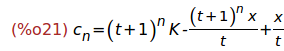
(%i22)
ratsimp(%);
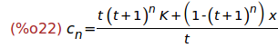
Ejercicio 3.2. Se sabe que c[N]=0. Deducir el valor de x en función de
K, t y N.
(%i23)
define(c[n],rhs(%));
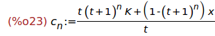
(%i24)
solve(c[N],x);
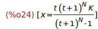
Ejercicio 3.3. Calcular el importe de una anualidad, cuando
K = 100000, t = 5,5% y N = 15.
(%i25)
subst([K=100000,t=5.5,N=15],%);
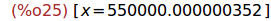
4 Ejercicio 4
Ejercicio 4.1. Definir la función f(x) = x/(3-2x).
(%i26)
f(x) := x/(3-2*x);
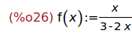
Ejercicio 4.2. Definir la sucesión u[n] tal que
u[0] = 2
u[n+1] = f(u[n])
(%i27)
u[0] : 2$
u[n] := f(u[n-1])$
Ejercicio 4.3. Calcula u[1], u[2] y u[9].
(%i29)
makelist('u[i]=u[i],i,[1,2,9]);
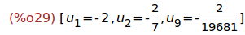
Ejercicio 4.4. Dibujar, en la misma gráfica, la función f, la recta de
ecuación y=x y los puntos de coordenada (u[k],f(u[k])) para 0<=k<=15.
(%i30) puntos : makelist([u[k],f(u[k])],k,0,15)$
(%i31)
wxplot2d([f(x),x,[discrete,puntos]],[x,-9,9],[y,-9,9],
[style, lines,lines,linespoints],
[gnuplot_preamble, "set key left top"]);
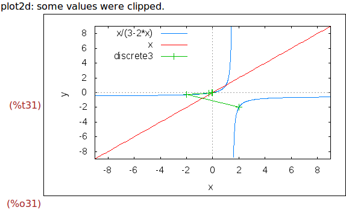
(%i32)
wxplot2d([f(x),x,[discrete,puntos]],[x,-3,3],[y,-3,3],
[style, lines,lines,linespoints],
[gnuplot_preamble, "set key left top"]);
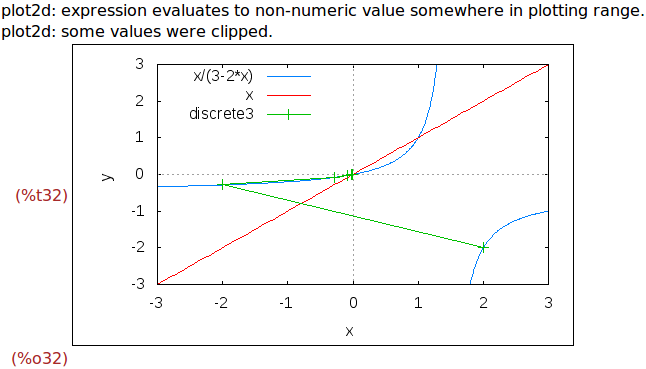
(%i33)
wxplot2d([f(x),x,[discrete,puntos]],[x,-0.5,0.5],[y,-0.5,0.5],
[style, lines,lines,linespoints],
[gnuplot_preamble, "set key left top"]);
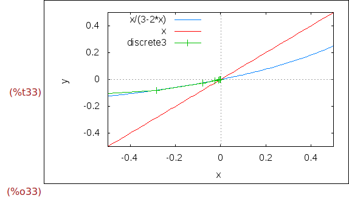
Ejercicio 4.4. Conjeturar la monotonía de la sucesión u[n] y su limite.
Solución: La sucesión u[n] es monótona decreciente y su límite es 0.
Ejercicio 4.5. Resolver la ecuación f(x)=x. Llamar a las raices a y b.
(%i34)
solve(f(x)=x,x);
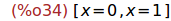
(%i35) a:0$ b:1$
Ejercicio 4.6. Definir la sucesión w[n] = (u[n]-a)/(u[n]-b)
(%i37)
w[n] := (u[n]-a)/(u[n]-b);
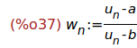
Ejercicio 4.7. Calcular los 10 primeros términos de la sucesión w[n].
(%i38)
makelist(w[n],n,0,9);
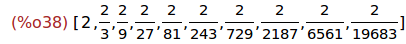
Ejercicio 4.8. Comprobar que w[n] es una progresión geométrica y calcular
su razón.
Solución: se observa que w[n] es la progresión geométrica de término
inicial 2 y razón 1/3.
Ejercicio 4.9. Deducir la expresión de u[n] en función de n.
(%i39)
solve((x-a)/(x-b)=2/3^n,x);
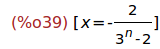
Por tanto, u[n] = -2/(3^n-2). Puede comprobarse como sigue
(%i40)
makelist([u[n],-2/(3^n-2)],n,0,5);
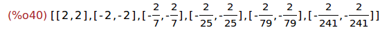